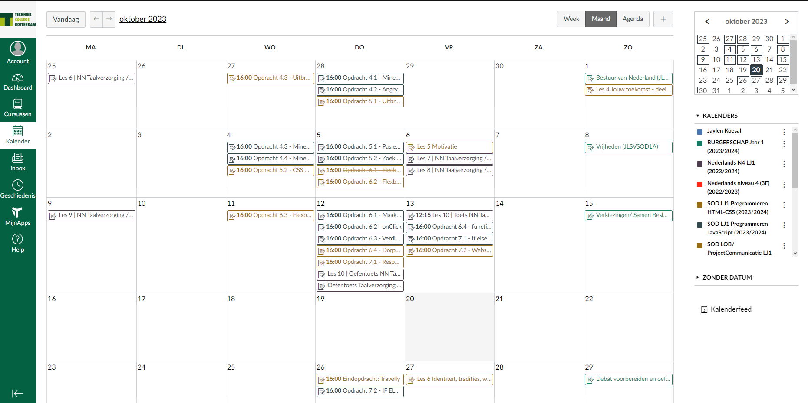

Canvas is een school app die wij gebruiken op het Techniek College voor meer gebruik.
Zo word Canvas gebruikt om onze opdrachten te zien, in te leveren en kunnen wij onze lessen hier ook erin zien.
Dit allemaal geldt voor al onze vakken.
we hebben ook een canvaskalender. In deze kalender kunnen we opdrachten de inleverdatum zien. het Zorgt er ook voor dat elk vak een eigen kleurcode heeft, zodat duidelijk is welk vak wanneer moet worden afgerond U kunt er ook voor kiezen om uw werk wekelijks, maandelijks of op specifieke dagen in de kalender te bekijken.
Op Canvas zien wij onze cursussen, of terwijl onze vakken. Hier zien wij per vak onze theorie, uitleg en opdrachten met bijlagen.
Zo kunnen wij hier in dit gedeelte van canvas het belangrijkste zien. In dit gedeelte kun je per vak zien wat en wanneer de opdrachten
per week af moet. Ook zie je per week de theorie en bijlagen die de opdrachten van die week ondersteunen en uitleggen.
Via de inbox zie je wat voor opdrachten je krijgt. Hier worden mails verzonden en ontvangen door de docent en leerling.
Je hebt 2 menu's eentje voor de vakken die je volgt en de andere voor de berichten die je krijgt
Voor de type berichten zijn er 6 types, namelijk:
inbox
Ongelezen
Met ster
Verzonden
Gearchiveerd
Opmerkingen over inleveringen
In Canvas staat er per week een powerpoint met daarin alle doelen die we moeten bereiken met de opdrachten. Zo weten de leerlingen wat ze kunnen verwachten van de les.
Verder kun je in canvas op de kalender de planning zien voor de opdrachten met de deadline ernaast.Als je het te laat inlevert geven docenten je minpunten. De planning is ook terug te vinden bij de lessen.
Net zoals de meeste schoolapps, canvas heeft ook een app voor de Ouder/Verzorgers.
Dit geldt wel wanneer de leerling onder 18 is. Dit is heel handig, zo kunnen de ouders/verzorgers
de leerling helpen wanneer ze huiswerk zijn vergeten
Elke school of werkomgeving heeft wel een rooster. Op het Techniek College Rotterdam maken wij gebruik van EduArte.
In EduArte zien wij ons agenda, absentie, berichten en resultaten.